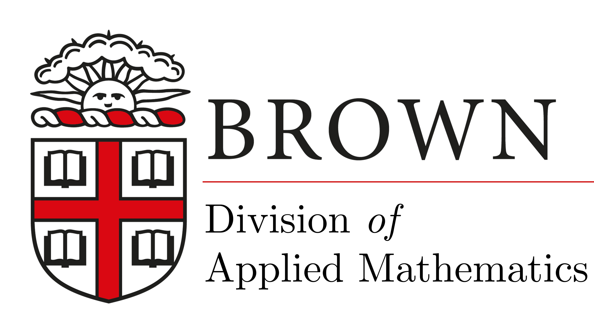

Topology Optimization via Mirror Descent
A constraint-aware geometry for density-based design
1Division of Applied Mathematics, Brown University · 2Affiliation B
Working notes · May 2026

Abstract
We present a mirror-descent approach to density-based topology optimization that respects the pointwise box constraints $0\le\rho\le 1$ as part of the geometry of the iterates. The method replaces the Euclidean projection step of projected gradient descent with a Bregman projection induced by a constraint-aware entropy, yielding feasible iterates by construction and improved convergence on benchmark compliance problems.